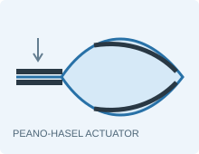
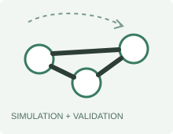
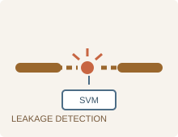

Research
I am broadly interested in computational modeling of mechanical and biological systems, with an emphasis on
multibody dynamics, geometrically nonlinear structures, soft robotics, and model validation. I combine numerical
methods with purpose-built experiments to test model assumptions and quantify where simplified descriptions break down.
|
 |
Small-Scale Analysis of Peano-HASEL Actuators
Master's thesis, University of Stuttgart with MPI-IS, 2026
Developed a new modeling method for miniaturized Peano-HASEL actuators by replacing the prescribed
circular-arc geometry with a geometrically nonlinear planar-elastica formulation. Coupled structural
equilibrium with hydrostatic pressure, liquid incompressibility, and minimum-potential-energy calculations
in a modular MATLAB framework using bvp4c, fminbnd, and continuation methods.
Manufactured and tested actuators with 5, 10, and 20 mm pouch lengths. The results showed that film bending
becomes increasingly important with downscaling and that the circular-arc model increasingly underestimates
bending energy. At 8 kV and zero external force, the analytical–numerical actuation-strain difference increased
from approximately 11% for 20 mm pouches to 36% for 5 mm pouches.
|
 |
Multibody Simulation and Model Validation
Neuromechanics of Movement, MPI-IS, 2025–present
Developed a dynamic multibody simulation framework in MATLAB and worked on its verification and validation.
Designed and fabricated experimental setups and test specimens, then used image-based measurements to compare
simulated and observed motion.
|
 |
Machine Learning for Pneumatic Leakage Detection
Institute of System Dynamics, University of Stuttgart, 2024–2025
Developed an SVM-based system for detecting leakage in pneumatic systems, using Python and TensorFlow to connect
data-driven classification with an engineering diagnostic problem.
|
Experience
Starting Oct 2026PhD Researcher — IMPRS-IS
Max Planck Institute for Intelligent Systems · funded by the Heidelberg Academy of Sciences and Humanities
Jul 2025–presentResearch Assistant — Multibody Simulation
Max Planck Institute for Intelligent Systems, Stuttgart
Dec 2024–Jun 2025Research Assistant — Machine Learning
Institute of System Dynamics, University of Stuttgart
Jul–Aug 2022Hard Trim Design Intern, Research & Development
TOFAŞ / Stellantis, Bursa
|
Education
2024–2026M.Sc., Computational Mechanics of Materials and Structures
University of Stuttgart — thesis completed; degree confirmation pending · current grade 1.6
2019–2023B.Sc., Mechanical Engineering
Middle East Technical University, Ankara
|
Technical Profile
Modeling and simulation: multibody dynamics, nonlinear structural mechanics, boundary-value
problems, energy minimization, finite-element analysis, model verification, and experimental validation.
Software: advanced MATLAB, Simulink, Simscape, Python, TensorFlow, MuJoCo, SolidWorks, and Siemens NX;
working experience with C/C++, ANSYS, and LS-DYNA.
Selected coursework: computational dynamics for robotics, soft robotics, legged locomotion,
nonlinear computational mechanics, advanced finite elements, machine learning for mechanics, and computational
human-body models.
Languages: Turkish (native), English (C1; IELTS 7.5), and German (B2).
|
Mentoring and Outreach
At MPI-IS, I mentored an intern for three months during the planning and construction of a validation test setup.
I also designed CAD and 3D-printed games for children's outreach activities at the institute.
|
|
{kind=link}